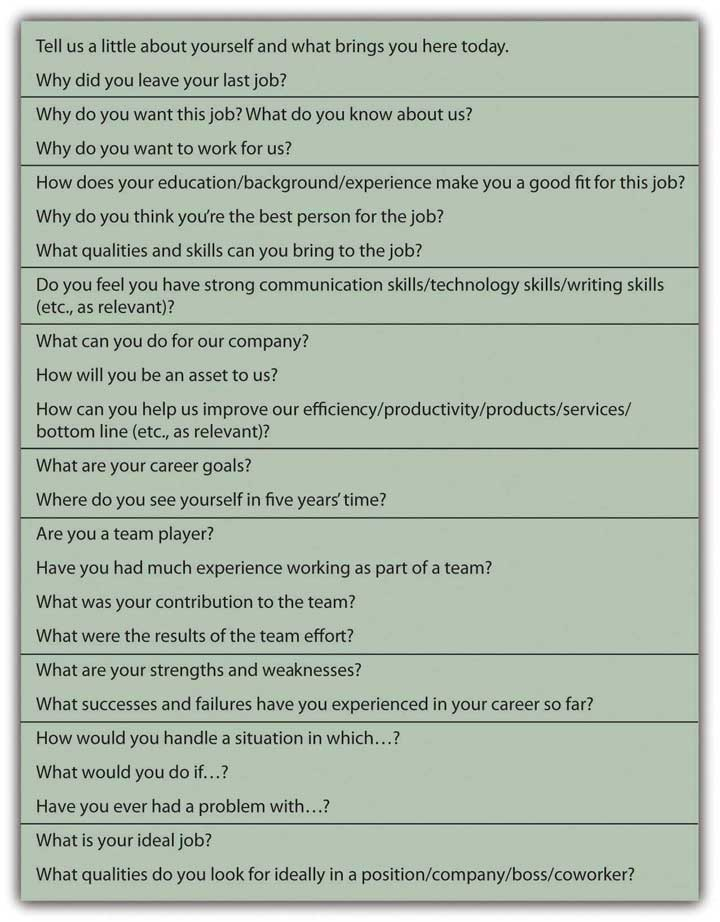

A job search is a part of everyone’s life, sooner or later. It may be repeated numerous times throughout your career. You may initiate a job search in hopes of improving your position and career or changing careers, or you may be forced into the job market after losing your job. Whatever the circumstances, when you look for a job you are seeking a buyer for your labor. The process of having to “sell” yourself (your time, energy, knowledge, and skills) is always revealing and valuable.
Before you can look for a job, you need to have an idea of what job market you are in. The same macro factors that you consider in your choice of career may make your job search easier or harder. Ultimately, they may influence your methods of searching or even your job choice itself. For example, as unemployment has increased in the wake of the most recent financial crisis, the labor market has become much more competitive. In turn, job seekers have become much more creative about advertising their skills—from broader networking to papering a neighborhood with brochures on windshields—and more accepting of job conditions, including lower compensation. A good place to start is the U.S. Department of Labor’s “Occupational Outlook Handbook.”See, for example, U.S. Department of Labor, Bureau of Labor Statistics, http://www.bls.gov/oco, and “Tomorrow’s Jobs,” http://www.bls.gov/oco/print/oco2003.htm (accessed July 20, 2009). The handbook is updated annually. For hundreds of industries and specific jobs it tells you the training and education you need, what you will earn and what your job prospects are, what the work entails, and what the working conditions are like. The site also offers valuable tips on conducting job searches.
Knowing the job classification and industry name will focus your search process and make it more efficient. Once you understand your job market, look at the macro and micro factors that affect it along with your personal choices. For example, knowing that you are interested in working in business, transportation, or the leisure and hospitality industry, you are ready to research that field more and plan your job search.
You are looking for a buyer of your labor, so you need to find the markets where buyers shop. One of the first things to do is find out where jobs in your field are advertised. Jobs may be advertised in
Figure 18.5 "Sources of Information about Jobs" describes these venues in more detail.
Figure 18.5 Sources of Information about Jobs

Consider Sandy, for example, who is graduating with a bachelor’s degree in hospitality management. Her dream job is to work at an inn or bed and breakfast in a resort location. The Professional Association of Innkeepers International (PAII) offers a Web site and journal—good places to start reading and learning about the industry. It also lists upcoming trade conferences that may be a good opportunity for Sandy to meet some people in the industry.The Professional Association of Innkeepers International, http://www.paii.org (accessed July 23, 2009).
Browsing online, Sandy learns about a big job fair coming to her region, sponsored by the PAII in association with a chamber of commerce and an economic development agency. This is her chance to meet recruiters in her industry and find out about actual opportunities. Each prospective employer will have a table, and Sandy will go from table to table, getting information, dropping off her résumé, and possibly setting up interviews.
She also plans to register with an employment agency that specializes in hotel management for smaller hotels and inns. The agency will screen her application and try to match her with appropriate jobs in its listings. For a specified time it will keep her résumé on file for future opportunities.
Sandy’s strategy includes posting her résumé on employment web sites, such as Monster.com, and Careerbuilder.com. Browsing jobs online, Sandy discovers there is a strong seasonal demand for hospitality workers on cruise ships, and this gives her an idea. If the right choice doesn’t come up right away, maybe a summer job working for a cruise line would be a good way to develop her knowledge and skills further while looking for her dream job in management.
Sandy needs to research destinations as well as businesses and wants to talk with people directly. She knows that cold calls—calling potential employers on the phone as a complete unknown—is the hardest way to sell herself. In any industry, cold calling has a much lower success rate than calling with a referral or some connection—otherwise known as networking.
NetworkingA process of using personal contacts to get information and find job opportunities. is one of the most successful ways of finding a job. It can take many forms, but the idea is to use whatever professional, academic, or social connections you have to enlist as many volunteers as possible to help in your job search. According to popular theory, your social networks can be seen as assets that potentially help you build wealth. That is, the number and positions of people you can network with and the economically viable connections you can have with them are a form of capital—social capitalConnections within and between social networks that may be useful, as an asset, in a market..Robert Putnam, Bowling Alone: The Collapse and Revival of American Community (New York: Simon & Schuster, 2000).
Word of mouth is a powerful tool, and the more people know about your job search, the more likely it is that they or someone they know will learn of opportunities. Sandy’s strategy also includes joining online career networking sites, such as LinkedIn, and discussion lists for people in the hospitality industry. Sandy finds a helpful Yahoo! group called The Innkeeper Club and posts a query about what employers look for in a manager.
While Sandy was in college getting her degree in hospitality management, her best friend from high school was happily styling hair in a local salon. Sandy never thought to network through her friend, but it turns out that one of her friend’s clients has a sister who owns a country inn with her husband, and they are thinking about hiring someone to manage their enterprise. After driving several hours to meet them, Sandy learns they have changed their minds and are not hiring now. However, they know of two other innkeepers who may be looking for help. Since they are impressed with Sandy, they are happy to pass along her name and résumé.
That’s how networking works—you just never know who may be helpful to you. The obvious people to start with are all the people that you know: former professors, former employers, friends, family, friends of family, friends of friends, family of friends, and so on. The more people you can talk with or send your résumé to (i.e., impress), the greater the chances that someone will make an offer.
Another good networking strategy is to call or e-mail people working in the industry, individuals who are currently in or just above the position you’d like to have, and ask to talk with them about their work. If you make it clear that you are not asking for or expecting a job offer from them, many people will be happy to take a half hour to discuss their jobs with you. They may have valuable tips or leads for you or be willing to pass along your name to someone else who does.
To get a job you will have to convince someone who does not know you that you are worth paying for. You have an opportunity to prove that in your cover letter and résumé and again in your interview.
The cover letter, whether mailed or an e-mailed, is your introduction to your prospective employer. You have three paragraphs on one page to briefly introduce yourself and show how you can make a profitable contribution to the company. The objective of the cover letter is to get the reader to look at your résumé with a favorable impression of you created by the letter.
Your first paragraph should establish your purpose in making contact, the reason for the letter. You should make it clear what job you are applying for and why you are making this particular contact. If someone referred you, mention him or her by name. If you met the addressee previously, remind him or her where and when that was, for example, “It was great to chat with you at the Jobs Fair in Cleveland last week.” The more specifically you can identify yourself and separate yourself from the pool of other job seekers, the better.
The second paragraph of your cover letter should summarize your background, education, and experience. All this information is on your résumé in more detail, so this is not the place to expound at length. You want to show briefly that you are qualified for the position and have the potential to make a contribution.
Your third paragraph is your opportunity to leave the door open for further communication. Make it clear where and how you can be reached and how much you appreciate the opportunity to be considered for the position.
The résuméA document that summarizes job experience, education, and civic activities. It is commonly used in the job application process., the summary list of your skills and knowledge, is what will really sell you to an employer, once you have made a good enough impression with the cover letter to get him or her to turn the page. A good résumé provides enough information to show that you are willing and able to contribute to your employer’s success—that it is worth it to hire you or at least to talk to you in an interview.
List the pertinent facts of where and how you can be reached: address, phone number, e-mail address. Your qualifications will be mainly education and experience. List any degrees, certificates, or training you have completed after high school. Be sure to include anything that distinguishes your academic career, such as honors, prizes, or scholarships.
List any employment experience, including summer jobs, even if they don’t seem pertinent to the position you are applying for. You may think that being a camp counselor has nothing to do with being a radiology technician, but it shows that you have experience working with children and parents, have held a position where you are responsible for others, and that you are willing to work during your school breaks, thus showing ambition. If you are starting out and can’t be expected to have lots of employment experience, employers looks for hints about your character—things like ambition, initiative, responsibility—that may indicate your success working for them.
Internships that you did in college or high school are also impressive, showing your willingness to go beyond the standard curriculum and learn by working—something an employer will expect you to continue to do on the job, too. While you are in school, you should recognize the value added by experiential learning and the positive impression that it will make. An internship can also give you a head start in networking if your supervisor will be a good reference or source of contacts for you. The internship may even result in a job offer; you may not necessarily want to accept, but at the very least, having an offer to fall back on takes some of the pressure off your search.
For each job, be clear about the position you held and the two most important duties or roles you performed. Don’t go into too much detail, however. The time to expand on your story is in the interview.
If you have done internships or volunteer work or if you are a member of civic or volunteer organizations, be sure to list those as well. They are hints about you as a person and may help you to stand out in the pool of applicants.
A common mistake is to list too much extra information on your résumé and to focus too much on what you want. For example, stating an objective such as “to obtain a great position in hotel management.” Your employer cares about what you can do for the company, not for yourself. The following are some tips for developing your résumé:
A myriad of sample résumés and sample cover letters may be found online, but be wary of templates that may not fit you or your prospective job. Employers in your field may have particular expectations for what should be on your résumé or how it should be structured. Maybe you should list your skills or perhaps your education first. Perhaps it would be preferable to list your past employment experiences in reverse chronology (with your most recent job first). Advice is plentiful about how to write a résumé, but there is no one right way or best way. Choose an appropriate style and format for your job category that will present you in the best possible light as a prospective employee.
Many employers want you to fill out an application form independently of or instead of a résumé. They may also ask for references, especially from former employers who are willing to recommend you. Be aware that hirers and human resources department personnel routinely follow up on references and letters of recommendation. Find out more about filling out employment applications at About.com at http://jobsearch.about.com/cs/jobapplications/a/jobapplication.htm and other sites.
There are many resources available in print and online to help you write a good résumé. In addition, résumé writing workshops and short courses are often held at community colleges or adult education centers.Ellen Gordon Reeves, Can I Wear My Nose Ring to the Interview? (New York: Workman Publishing, 2009).
The interview—a face-to-face conversation with a prospective employer—is your chance to get an offer. You want to make a good personal impression: dress professionally but in clothes that fit well and comfortably. Be polite and cordial but also careful not to assume too familiar a tone.
You may be asked a series of predetermined questions, or your interviewer may let the conversation develop through open-ended questions. The interviewer may let you establish its direction in order to learn more about how you think. However the conversation is guided, you want to be able to showcase your suitability for the job and what you bring to it. Figure 18.8 "Questions Prospective Employers Commonly Ask" identifies some questions employers commonly ask in job interviews.
Figure 18.8 Questions Prospective Employers Commonly Ask
Be prepared for interviewers who prefer to focus on general behavioral questions rather than on job specific questions. Behavioral interviewsA common type of job interview in which the candidate is asked about past behavior in a specific set of circumstances. emphasize your past actions as indicators of how you might perform in the future. The so-called STAR MethodA popular method of preparing narratives for behavioral interviews by referring to job situations, tasks, actions, and results. is a good approach to answering behavioral questions, as it helps you to be systematic and specific in making your past work experiences relevant to your present job quest. The STAR MethodThe STAR Method: http://web.mit.edu/career/www/guide/star.html, http://www.drexel.edu/SCDC/resources/STAR%20Method.pdf, http://www.officearrow.com/home/articles/the_officearrow_career_center/human_resources_and_job_search/p2_articleid/294/p142_id/294/p142_dis/3 (accessed August 5, 2009). is a process of conveying specific situations, actions, and outcomes in response to an interviewer’s question about something you did.
For example:
Question: We are looking for someone who is willing to take initiative in keeping our office systems working efficiently and who can work without a lot of direct supervision. Does that describe you?
Answer: Absolutely. For example, in my last job I noticed that the office supply system was not working well. People were running out of what they needed before letting me know what to order (Situation). I thought there needed to be a better way to anticipate and fill those needs based on people’s actual patterns of use (Task). So, I conducted a poll on office supply use and used that information to develop a schedule for the automatic resupply of key items on a regular basis (Action). The system worked much more smoothly after that. I mentioned it in my next performance review, and my boss was so impressed that she put me in for a raise (Results).
There are some questions employers should not ask you, however. Unless the information is a legal requirement for the job you are interviewing for, antidiscrimination laws make it illegal for an employer to ask you your age; your height or weight; personal information such as your racial identity, sexual orientation, or health; or questions about your marital status and family situation, such as the number of children you have, whether you are single, or if you are pregnant or planning to start a family.
It is also important for you to have questions to ask in an interview, so you should prepare a few questions for your interviewer. Questions could be about the company’s products or services, the company’s mission or goals, the work you would be doing, who you would be reporting to, where you would be located, and the opportunities for advancement. You want your question to be specific enough to show that you have already done some research on the company, its products, and markets. This is a chance to demonstrate your knowledge of the job, company, or industry—that you have done your homework—as well as your interest and ambition.
Unless your interviewer mentions compensation, don’t bring it up. Once you have the job offer, then you can discuss compensation, but in the interview you want to focus on what you can do for the company, not what the company can do for you.
You can also use the interview to learn more about the company. Try to pick up clues about the company’s mission, corporate culture, and work environment. Are people wearing business attire or “business casual”? Are there cubicles and private offices or a more open workspace? Are people working in teams, or is it more of a conventional hierarchy? You want to be in a workplace where you can be comfortable and productive. Be open-minded—you may be able to work quite well in an environment you have never worked in before—but think about how you can do your best work in that environment.
After your interview, send a thank you note, and follow up with a phone call if you don’t hear back. You may ask your interviewer for feedback—so that you can learn for future interviews—but don’t be surprised and be gracious, if you don’t get it. Always leave the door open. You never know.
A job offer should include details about the work you will be performing, the compensation, and the opportunity to advance from there. If any of that information is missing, you should ask about it.
In many jobs, you may be asked to do many things, especially in entry-level jobs, so the job description may be fairly vague. Your willingness to do whatever is asked of you (within the law and according to ethical standards) should be compensated by what you stand to gain from the job—in pay or in new knowledge and experience or in positioning yourself for your next job. Some jobs are better looked at as a kind of graduate education.
Your compensationPayment for labor, including wages, salaries, commissions, stock options, and fringe benefits such as health, disability, and life insurance. includes not only your wages or salary but also any benefits that the employer provides. As you read in previous chapters, benefits may include health and dental insurance, disability insurance, life insurance, and a retirement plan. Compensation also includes time off, sick days, and vacation days. You should understand the company’s policies and flexibility in applying them.
Know what your total compensation will be and whether it is reasonable for the job, industry, and current job market. Asking around may help, especially on online discussion groups with relative anonymity. People often are reluctant to disclose their compensation, and companies discourage sharing this information because it typically reveals discrepancies. For example, people hired in the past may be receiving less (or more) pay than people hired recently for the same position. In addition, gender gap—in which men receive higher pay than women in the same position—is often a problem.
To gauge how reasonable a job offer is, you can research professional associations about pay scales or find statistical averages by profession or region. Online resources include simple salary comparison calculators, such as the one at http://monster.salary.com. You also will find data and related articles linking salaries to specific job titles, area codes, states, educational levels, and years of work experience, for example, at http://www.payscale.com/research/US/Country=United_States/Salary.
Realistically compare the job offer to your needs. Different geographic areas have different costs of living, for example, so the same salary may afford you a very different lifestyle in Omaha than in New York City. Your employment compensation is most likely an important source—perhaps your only source—of income. That income finances your plan for spending, saving, and investing. A budget can help you to see if that income will be sufficient to meet your financial goals. If you already have financial responsibilities—student loans, car loans, or dependents, for example—you may find that you can’t afford the job.
You can negotiate your compensation offer; many employers expect you to try, but some will just stand by their offer—take it or leave it. Your ability to negotiate depends in part on the number of candidates for that particular job and how quickly the employer needs to fill it. You will find guidelines online for evaluating job offers and negotiating your compensation, for example, among the useful links at http://www.rileyguide.com/offers.html. Another resource includes the simple “Job Offer Checklist” at http://www.collegegrad.com/offer.
In some cases, your employer may offer you a contract, a legal agreement that details your responsibilities and compensation and your employer’s responsibilities and expectations. As with any contract, you should thoroughly understand it before signing. If you will be employed as a member of a trade union or labor union under a collective bargainingThe practice of union and employer representatives negotiating an employment contract to determine wages, hours, work rules, and working conditions. agreement, the terms of the contract may be applicable to all union members and therefore not negotiable by individual employees.
It is exciting to get a job offer, but don’t let the excitement overwhelm your good sense. Before you accept a job, feel positive that you can live with it. You never really know what a job is like until you do, but it is better to go into it optimistically. When you are just starting a career or trying one out, it is most important to be able to learn and grow in your job, and you may have a period of “paying your dues.” But if you are really miserable in a job, you won’t be able to learn and grow, no matter how “golden” the opportunity is supposed to be.
Venues for finding jobs include
Selling your labor to a prospective employer usually involves sending a cover letter and résumé, filling out an application form, and/or having an interview.
A job offer includes information on the
Accepting a job offer may involve
How will you prepare for a job interview? Read a New York Times interview with the CEO of Cisco Systems, John Chambers, about corporate leadership and recruitment at http://www.nytimes.com/2009/08/02/business/02corner.html?th&emc=th. In the second half of the article, the interviewer asks, “How do you hire?” What qualities of new recruits to corporate management does this CEO look for? Read the articles on interviewing at the following Careerbuilder.com URLs: